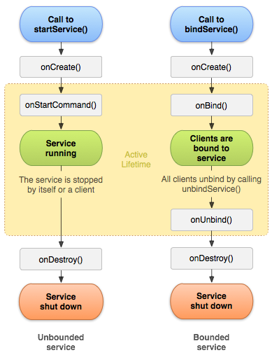

Service
目录
生命周期

要点
服务在其托管进程的主线程中运行，它既不创建自己的线程，也不在单独的进程中运行（除非另行指定）。
两种调用方式：startService() 和 bindService()。
startService() 与 bindService() 有可能都被调用，那样除非所有客户端均取消绑定（组件销毁或 unbindService()），且调用过 stopService() 或 stopSelf() 后才会实际停止服务。
多次服务启动请求会导致多次对服务的 onStartCommand() 进行相应的调用。但是，要停止服务，只需一个服务停止请求（使用 stopSelf() 和 stopService()）即可。
如何让 Service 不被杀死
将服务绑定到具有用户焦点的 Activity；
将服务声明为在前台运行；
onStartCommand() 返回 START_STICKY 或 START_REDELIVER_INTENT；
注册一些系统广播事件拉活服务；
Native 守护进程或 Service 守护，轮询状态，检测到进程结束就启动；
两个分别运行在独立进程里的 Service，相互绑定，在一个服务被杀死后，另一个会被调用到 onServiceDisconnected，在里面调用 startService 和 bindService 启动对方。